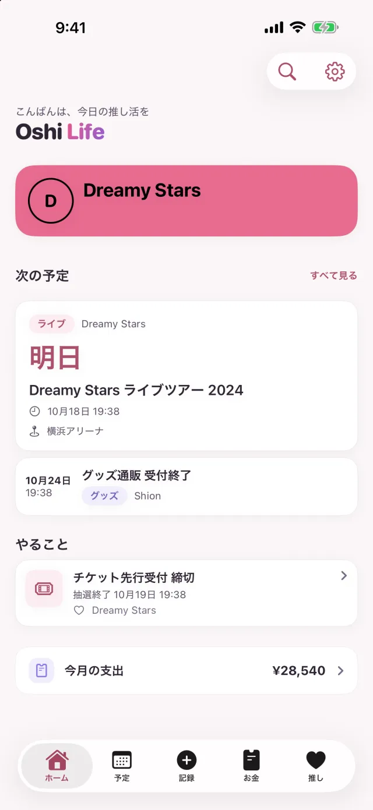
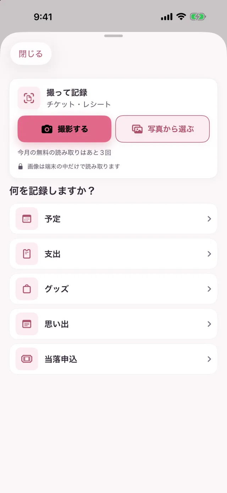
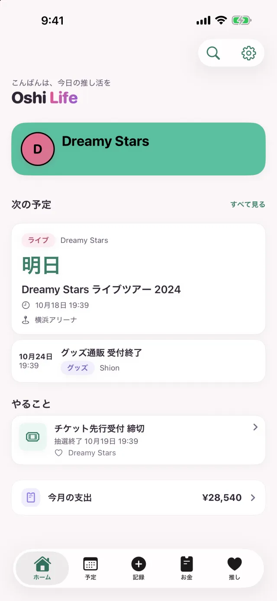
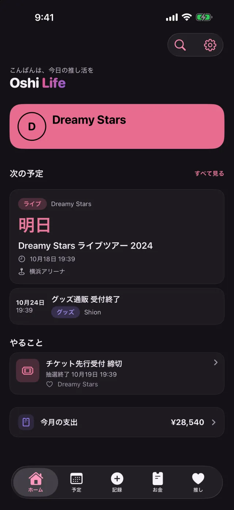
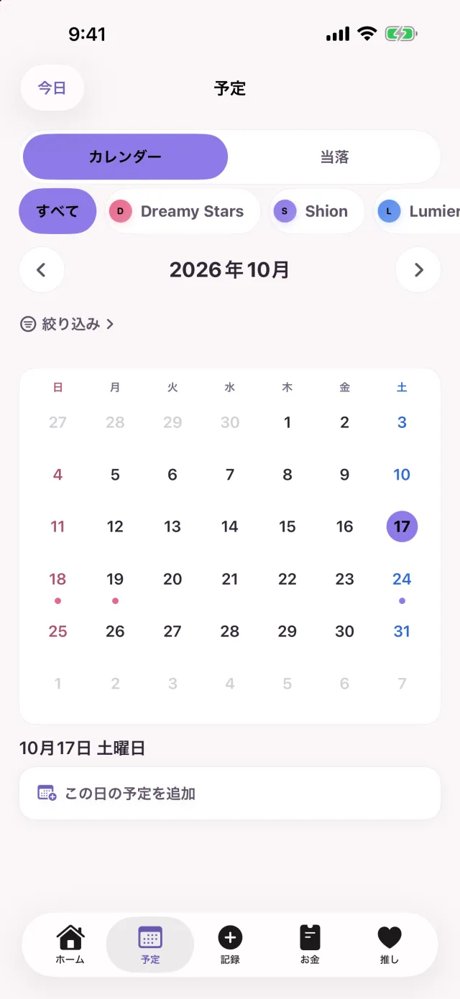
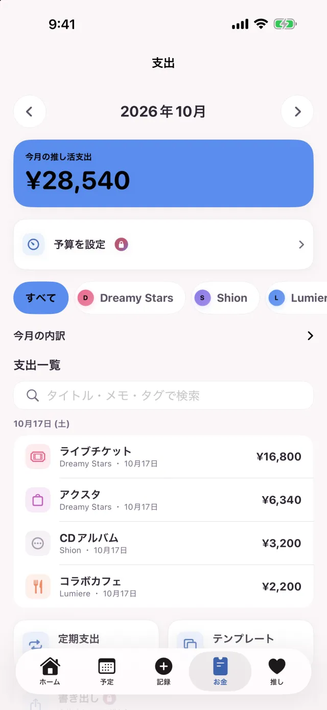
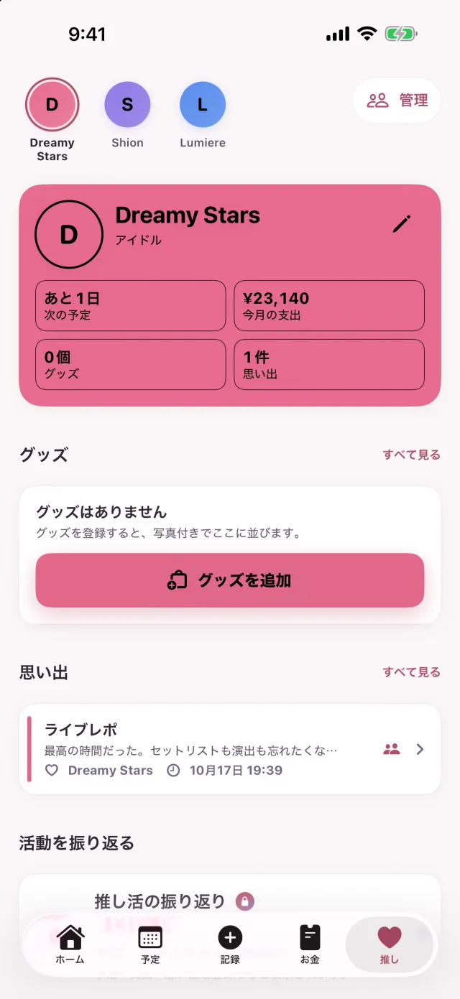

Free
無料で使えるプランです。
| 推し | 3人 |
|---|---|
| 予定 | 30件 |
| 支出 | 50件 |
| 思い出 | 50件 |
| グッズ | 50件 |
| 同時に進める抽選の申込 | 1件 |
| 撮って記録 | 月3回 |
当落ボードが作る予定は、予定の数に入りません。落選した申込と入金を済ませた申込は、同時に進める申込に数えません。
推し活の記録アプリ Oshi Life 2.0
チケットやレシートを撮ると、予定や支出、グッズの下書きができます。中身を確かめて保存すれば、手で打つのは直したいところだけ。申込の締切や当落発表、推しに使ったお金まで、iPhone ひとつで管理できます。
撮って記録は、Free プランだと月3回まで（チケットとレシートを合わせた回数）。Premium は回数の制限がありません。
無料（アプリ内課金あり）・iOS 17.0 以降の iPhone

撮って記録
遠征から帰って、財布の中のレシートを1枚ずつ打ち込む。その作業を、撮って中身を確かめる作業に変えます。
アクリルスタンドとマフラータオルを買ったレシートなら、品目ごとにグッズと支出の記録が1件ずつできます。税などの残りは「その他」の支出にまとめ、品目が読めないときは合計を支出にします。
公演名・日時・会場・座席・代金を読み取って、予定の下書きにします。代金が読めていれば、予定を保存したあとにチケット代も支出に残せます。
撮るほかに、写真から選ぶこともできます。チケットとレシートを読み違えたときは、同じ画像をもう一方として読み直せます。
読み取りは iPhone の中で行います。読み取りのために画像や文字を外へ送ることはありません。
Free プランは月3回まで（チケットとレシートを合わせた回数）。Premium は回数の制限がありません。

推しの色とダークモード
ボタンやタブ、カードの差し色が、いま選んでいる推しの色になります。ピンクの推しならピンクに、ミントの推しならミントに。
推しごとに色を選んでおくと、その推しに切り替えたときに、アプリ全体の色も一緒に変わります。
はじめは iPhone の設定に合わせて切り替わります。設定の「表示モード」で、ライトかダークに固定することもできます。


予定と当落
抽選に申し込んだら、その申込を Oshi Life に登録しておきます。申込締切や当落発表、入金期限が予定に並び、近づくとお知らせが届きます。
申し込んだ公演と、締切や発表の日時を入れておきます。
申込締切・当落発表・入金期限が、自動でカレンダーに入ります。
当選を記録して公演日を入れると、公演の予定が加わります。
当落の結果を記録していくと、これまでの当選率を見られます。
申込締切と入金期限は前日に、当落発表はその時刻にお知らせします。
申込締切と入金期限を、前日に加えて3日前と当日の朝にもお知らせします。
予定タブの上の［カレンダー｜当落］で切り替えると、申込が「申込中」「当落待ち」「入金待ち」「参戦準備OK」「落選」に分かれて並びます。
ライブ、発売、配信、TV、ラジオ、YouTube、グッズなど。会場名も推しの名前も、自由に入力できます。

お金
チケット、グッズ、交通費、宿泊、飲食。記録した支出は推しごと・カテゴリごとに集計されて、お金タブで月ごとに見返せます。
合計と先月との差、内訳、一覧を、お金タブの1画面にまとめました。
よく使う支出は、テンプレートから入れられます。サブスクや会費は定期支出にしておくと、期日が来た分が自動で入ります。
グッズを登録するときに「支出にも記録する」をオンにしておけば、支出の記録も一緒にできます。
推しが2人以上なら、内訳と一覧を推しごとに絞り込めます。
月の予算を決めると、残りがホームとウィジェットに出ます。予算の80%に達したときと、超えたときにお知らせします。

推し
思い出には、写真とセットリストを添えて残せます。推しのページには、プロフィールと記念日、グッズ、思い出がまとまっています。
共有を選んだ思い出は、題と本文、セットリストが「みんなのレポート」でほかの人にも読まれます。写真は共有されません。
推し始めてからの日数や誕生日、記念日。節目の日はホームでお祝いして、その日のうちなら記念カードを無料で作れます。誕生日と記念日には、朝9時にお知らせが届きます。
1年のまとめは、無料でシェアカードにできます。

そのほか
ホーム画面やロック画面、Siri からも使えます。
「推し」のウィジェットに、推しの画像と推して何日目か、次の予定までの日数が出ます。「カウントダウン」と「今月の推し活費」のウィジェットは Premium です。
開演の6時間前から、ロック画面に開演までのカウントダウンが出ます。対応する iPhone では Dynamic Island にも出ます。
日時と会場、交通と宿、持ち物を1枚の画像にまとめて、同行者に送れます。金額は、はじめは画像に入らない設定です。
Siri やショートカットから、予定の追加や次の予定、今月の支出の確認ができます。
ゲストのままでも、ログインしたときと同じ機能を使えます。あとから Apple か Google でログインしても、記録は引き継がれます。
Face ID・Touch ID・パスコードで、アプリを開くときにロックをかけられます。
Free と Premium
Free プランには、記録できる数に上限があります。上限に達しても、それまでの記録はこれまでどおり見たり直したり消したりできます。
無料で使えるプランです。
| 推し | 3人 |
|---|---|
| 予定 | 30件 |
| 支出 | 50件 |
| 思い出 | 50件 |
| グッズ | 50件 |
| 同時に進める抽選の申込 | 1件 |
| 撮って記録 | 月3回 |
当落ボードが作る予定は、予定の数に入りません。落選した申込と入金を済ませた申込は、同時に進める申込に数えません。
月額か年額の、自動更新のサブスクリプションです。価格は App Store でご確認ください。
購読は、期間が終わる24時間前までに自動更新をオフにしない限り、自動で更新されます。購読の管理と解約は、購入後に iPhone の設定から行えます。
サポート
ここにない質問は、ページのいちばん下の「お問い合わせ」から送ってください。
読み取りは iPhone の中で行い、読み取りのために画像や文字を外へ送ることはありません。Premium では、支出に付けたレシートや思い出の写真がクラウドにも保存されます。
無料で使えます。Free プランには記録できる数に上限があります（上の表）。上限に達しても、それまでの記録はこれまでどおり見たり直したり消したりできます。
いりません。ゲストのままでも、ログインしたときと同じ機能を使えます。あとから Apple か Google でログインしても、記録は引き継がれます。
共有を選んだ思い出だけが「みんなのレポート」に出ます。共有するかは1件ずつ選べて、写真はほかの人には見えません。
iOS 17.0 以降の iPhone で使えます。言語は、日本語・英語・韓国語・中国語（簡体字・繁体字）に対応しています。